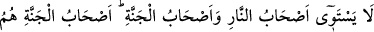
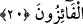

mümkün olur? Bugün henüz akşam olmadı ve sûfî bugündedir.
“Allah’ı unutan gibi olmayın.” Âyet-i kerimenin bu bölümü, insanın kendini
tanımasının Rabbini tanımak, Rabbini unutmasının da kendini unutmak anlamına
geldiğine bir tenbih, bir uyarıdır. Fethurrahman adlı eserde de denildiği gibi, bu âyet-i
kerimenin lafzı, kendisini bilen ve unutmayan kimsenin Rabbini bilen bir kimse
olduğunu göstermektedir.
Hz. Ali (k.v.) der ki: “Nefsini bil ki, Rabbini bilesin.”
Sehl (r.h.) de der ki: “Günah işleme anında Allah’ı unuttular, Allah da onlara af
dileme ve tevbe etme esnâsında kendilerini unutturdu.”
Kirlenmiş dudağımızla tevbe ederiz lâkin
İstiğfârımız çanından isyan sesi yükselir.
“Onlar yoldan çıkan kimselerdir.” Onlar unutanlar ve kendilerine kendi nefisleri
unutturulmak sûretiyle rezil edilenlerdir. Yine onlar, tâattan çıkmakta ve günahkarlıkta o
kadar ileri gitmişlerdir ki başkalarının günahları ve fâsıklıkları onların bu fâsıklık ve
günahları yanında hiç kalır. Hüm zamiri, fasikûn kelimesinden önce geldiğinden
hasr/sınırlama ifâde etmiş ve böyle bir mânâ anlaşılmıştır. Bu âyette kasdedilenler
kâfirlerdir. Ancak Allah’ın Rab olma hakkına riâyet etmekte ve ebedî saâdetten nasibini
almakta Allah’ın ahadiyet huzuruna yaklaşmanın öneminden gafil olan mü’min için de
büyük bir tehlike ve şiddetli bir korku söz konusu olduğu gibi, yine bu âyet-i kerimede
şu hususa bir işâret vardır: Allah’ı unutmuş olanlar, celal ve cemal sıfatlarının zuhur
ettiği ve yansıdığı bütün yerlerdeki Cenab-ı Hakk’ın şühûdunun dışına çıkmışlar, bu
makamlardan mahrum olmuşlar ve kendi nefislerinin şühûduna ve emrine girmişlerdir.
O halde nefsinin hoşlandığı şeyleri yapmakla meşgul olan kimse, Allah ile yâni O’nun
rahmet ve rızâsıyla yaşamanın güzelliklerini unutmuş ve gerçek lezzetlerden mahrum
kalmış olur. Nefsinin arzu ve şehvetlerinden uzaklaşan kimse de Rabbinin tecellîleriyle
bâki olur.
20. Cehennem ehliyle cennet ehli bir olmaz. Cennet ehli, isteklerine erişenlerdir.
“Cehennem ehliyle cennet ehli bir olmaz.” Cehennem ehli, Allah’ı unutmuş olmaları
sebebiyle cehennemde ebediyen kalmayı hak edenlerdir. en-Nar kelimesi lâm-ı târifli
olduğunda cehennem için özel isim olan kelimelerdendir. Nitekim, “es-Sa’atü”
kelimesinin kıyamete özel isim olduğu gibi. Bu sebepledir ki, “en-Nar” kelimesi burada
olduğu gibi çoğunlukla cennetin mukabilinde zikredilir.